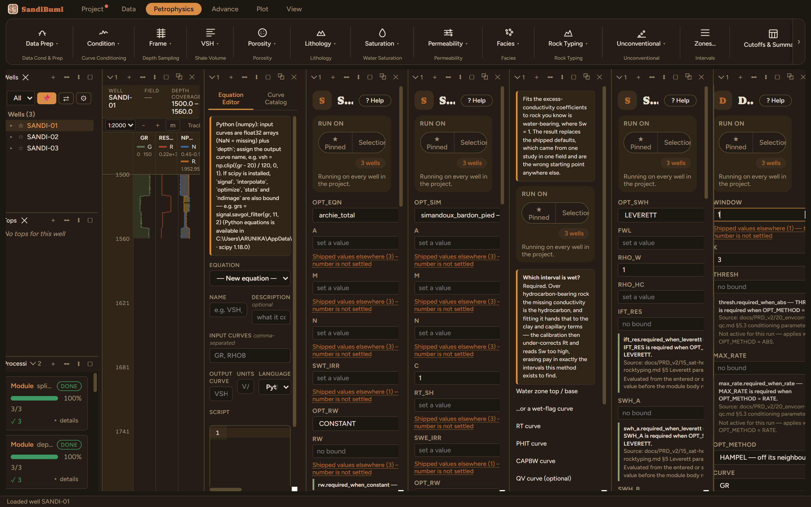

Despike replaces samples that stand off their neighbours with the local median, over a window stated as a thickness of rock rather than a sample count, so the same window means the same thing at any sampling. Four methods: the robust HAMPEL deviation test (the default), a plain ABS threshold, an unconditional MEDIAN, and a RATE limit that catches steps a median window misses.
Run it with no window and the module refuses, verbatim:
"WINDOW must be set — Filter window (thickness, centred)"
WINDOW has no default on purpose: what counts as a spike is a property of the tool, the sampling and the rock, and no one number is right in two basins.
HAMPEL, K 3 (shipped) and WINDOW 1 m, about 6.6 samples at this dataset's 0.1524 m step, above the five-sample floor the Hampel test needs, and narrower than the thinnest bed worth keeping. That last clause is the whole discipline: a bed no thicker than the window is indistinguishable from a spike, and will be flattened as one.

On these wells: 3 clean, with 61 samples replaced out of 1185. The flag curve GR_C_SPK says exactly which, and GR_C_ORIG keeps every original value. One K reads the same on GR, RHOB, NPHI and RT because the deviation is scaled by the Gaussian consistency constant × MAD, a mathematical estimator constant, not a calibration.